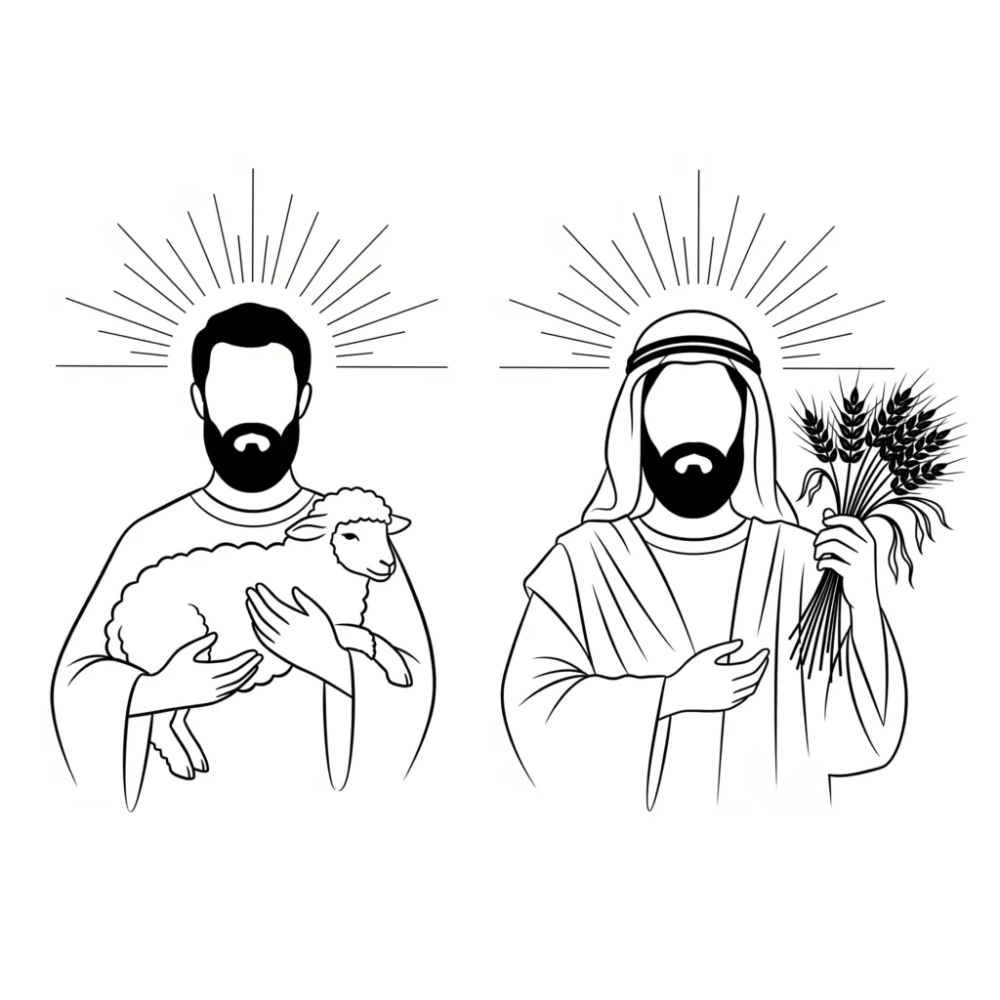

The early chapters of Genesis are not primitive myth. They are carefully coded metaphysics, and every verse plants a seed of symbolic principle. When Genesis 4 arrives and the word sin makes its first appearance in Scripture, it does not arrive as a list of prohibitions or a catalogue of wickedness. It arrives as the quiet disclosure of a law operating within consciousness itself.
Scripture is psychological drama. Its characters, events, and declarations describe the mechanics of how identity is assumed within awareness and how that assumed identity is then enforced as lived experience. Cain and Abel are not figures from ancient family history. They are aspects of your own being, and their encounter with the inner court of consciousness is the first full statement of what sin actually is and how it operates.
The First Appearance of Sin
And Abel gave an offering of the young lambs of his flock and of their fat. And the Lord was pleased with Abel's offering; But in Cain and his offering he had no pleasure. And Cain was angry and his face became sad. And the Lord said to Cain, Why are you angry? and why is your face sad? If you do well, will you not have honour? and if you do wrong, sin is waiting at the door, desiring to have you, but do not let it be your master.
Genesis 4:4-7
This is not a scolding from a distant authority. It is a revelation of law. YHVH/LORD, present consciousness, addresses Cain, the outer man, and discloses the precise mechanics of why one offering is received and the other is not. The displeasure is not arbitrary. It is the inner court returning a verdict consistent with what has been presented to it. Elohim, the Judges and Rulers of I AM, enforces impartially. If the identity presented is aligned with the desired state, the ruling is in its favour. If the identity presented is misaligned, Elohim rules accordingly and the experience of lack follows.
The Hebrew word translated as sin here is chatta'th, from the verb chata, meaning to miss the goal, to fall short of the mark, to err in direction. Sin in this original sense is not moral corruption. It is a jurisdictional error within the linguistic engine of consciousness. Thread 7 of the key identifies this precisely: sin is the mechanical failure that occurs when YHVH/LORD presents a fragmented or contradictory identity to the inner court while claiming the palace. Elohim enforces impartially. If lack is presented, lack is enforced. The mark is missed not through wickedness but through misdirected assumption.
Cain and Abel: The Outer Man and the Assumed Identity
Scripture consistently works through contrasting pairs. Jacob and Esau, Isaac and Ishmael, Sarah and Hagar, John and Jesus, the sheep and the goats. In each case one figure represents the identity rooted in present circumstances and visible evidence, while the other represents the assumed I AM that precedes outer confirmation. Cain and Abel are the first and foundational instance of this pattern, and they introduce it at the precise moment sin is defined.
In the Garden of Eden this same contrast is encoded in the two trees. The tree of the knowledge of good and evil is the tree of the man who reads the outer world and judges from appearances, measuring reality by what has already been cultivated and what currently stands before him. The tree of life is the tree of the identity that draws from a source prior to outer evidence, the assumed I AM that Elohim enforces into expression. These two trees are not destroyed when the Garden narrative closes. They reappear as Cain and Abel, and they continue to reappear throughout the whole of Scripture as the two fundamental orientations of consciousness.
And out of the ground the Lord God made every tree to come up which is beautiful to see and good for food; and the tree of life in the middle of the garden, and the tree of the knowledge of good and evil.
Genesis 2:9
Cain is the outer man. His name in Hebrew encodes acquisition, the getting of something already present in the visible world. He is a tiller of the ground, working the surface of what already exists, and his offering is drawn from that same ground. He is the consciousness that presents to the inner court only what it can already see, measure, and defend from appearance. This is the tree of the knowledge of good and evil in its operative form: judging what is real and what is possible from the evidence of the outer field.
Abel is the assumed identity, the Ehyeh/I AM that YHVH/LORD is being called to occupy. His name in Hebrew carries the meaning of breath or vapour, something that has no visible substance of its own but is entirely real. He keeps flocks, tending living creatures that move and multiply according to their own inner nature rather than being extracted from cultivated ground. His offering is the firstlings of the flock and their fat, the first and best of what has been generated from within, presented to the inner court before the full harvest is visible. This is the tree of life: the assumed identity drawing from an inner source and presenting it to Elohim as already real.
YHVH/LORD is pleased with Abel's offering because it aligns with the operative principle of creation established in Genesis 1. Elohim spoke each state of creation into existence before it was visible and declared it good. The verdict of good is Elohim pronouncing alignment between the assumed I AM and the statutes of creation. Abel's offering operates by the same principle. It presents the assumed identity before the evidence, and Elohim is bound to enforce it.
Cain's offering reverses this order. It presents what is already visible and asks for a different outcome. It is the outer man arguing from current circumstances rather than assuming a new identity within awareness. The inner court cannot rule in favour of a state that has not been assumed. Elohim enforces what is presented, not what is desired but withheld from assumption. The displeasure YHVH/LORD has in Cain's offering is the precise mechanical result of a filing that does not match the desired verdict.
If you do well, will you not have honour?
Genesis 4:7
This is the operative principle stated in its simplest form. To do well is not to behave morally. It is to assume well, to present to the inner court the identity of the desired state already occupied. The honour that follows is not a reward granted from outside. It is Elohim enforcing the verdict of the assumed I AM as lived experience. The outer world reflects the inner filing.
Pleasure, Eden, and the Condition of Alignment
The word translated as pleasure in Genesis 4:4 resonates with the Hebrew meaning embedded in the Garden of Eden itself. Eden encodes the state of perfect inner harmony, the condition in which present consciousness and assumed identity are unified, and Elohim enforces that unity as the whole of experience. This is the foundational state of creation before any fragmentation occurs. Abel's offering evokes this condition because it arises from an assumed identity that does not wait on outer confirmation. It is the inner world already governing the outer.
Cain's offering cannot evoke this pleasure because it arises from the outer man's attachment to the visible and cultivated. The outer man looks at what is and presents it as his offering, then expects a different outcome. This is the condition Thread 7 identifies as the false filing: claiming the palace while presenting the pit. Elohim rules in favour of what is actually presented, not what is desired in the abstract. The pleasure that Abel's offering produces is the same pleasure that Elohim pronounced over each day of creation in Genesis 1, the verdict of alignment between the assumed I AM and the statutes of reality.
But my righteous one shall live by faith, and if he shrinks back, my soul has no pleasure in him.
Hebrews 10:38
To shrink back is to withdraw the assumption before Elohim has enforced it. It is the movement from the assumed identity back toward the familiar state, the reversal of the cleaving described in Thread 3. YHVH/LORD leaves the old familiar state and cleaves to the new assumed identity in sustained union. If that cleaving is abandoned, the old filing reasserts itself and Elohim enforces it. The pleasure of YHVH/LORD is not an emotional response. It is the mechanical condition of alignment that makes enforcement possible.
Sin Crouching at the Door
Sin is waiting at the door, desiring to have you, but do not let it be your master.
Genesis 4:7
The door is the threshold of consciousness, the point at which an assumed identity passes from the inner court into expression as lived experience. Sin does not force entry. It waits. It desires to be assumed, to be the identity that YHVH/LORD presents to Elohim at that threshold. But the law is equally precise in the other direction: you may rule over it.
Thread 7 identifies repentance within this framework as the amending of the filing. The sin is not fixed. The jurisdictional error is correctable. YHVH/LORD shifts the I AM being presented to the inner court and Elohim, enforcing impartially according to the statutes of creation, rules in favour of the new identity. The crouching sin loses its jurisdiction the moment the assumed identity changes. This is not moral reformation. It is a precise mechanical correction within the linguistic engine of consciousness.
I, I AM he who blots out your transgressions for my own sake, and I will not remember your sins.
Isaiah 43:25
The transgressions are blotted out not through external forgiveness granted by a distant authority. They are blotted out because I AM, the governing identity assumed by YHVH/LORD, supersedes the previous filing. Elohim enforces the new I AM and the former verdict of lack is no longer operative. The inner court does not carry forward the record of a displaced identity. It enforces only what is currently presented. When I AM shifts, the memory of the former filing is erased from the jurisdiction of the court.
Hardness of Heart: The Sustained False Filing
The tragedy of Cain is not the initial error of his offering. It is his response to the correction. YHVH/LORD addresses him directly, identifies the misalignment, and discloses the law: if you do well you will have honour. The correction is offered. The path to alignment is stated plainly. Cain's response is anger and a face made sad, the emotional signature of a consciousness that refuses to amend the filing and instead hardens around the false identity.
Hardness of heart is the sustained presenting of a contradictory I AM to the inner court despite knowing the law. It appears throughout Scripture as the root condition of all spiritual blindness. Pharaoh hardens his heart against each demonstration that the assumed identity of Egypt's supremacy has already been displaced. Israel stiffens its neck in the wilderness, clinging to the Egypt-identity even after the cleaving described in Thread 3 has already begun. The Pharisees present their outer-man credentials to the inner court and refuse the correction that would amend the filing.
Take care, my brothers, for fear that there may be in any of you an evil heart, without faith, turning away from the living God. But go on comforting one another every day, as long as it is still Today; so that none of you may become hard through the deceit of sin.
Hebrews 3:12-13
The deceit of sin is the condition in which the outer man convinces present consciousness that the visible circumstances are more real than the assumed identity. Cain believes his offering should be sufficient because of what he has already cultivated. He measures from the outer world inward rather than from the assumed identity outward. This reversal is the deceit. It presents the current state as the final reality and denies Elohim's capacity to enforce a different verdict. Thread 5 shows Joseph as the corrective example: YHVH/LORD in the pit, assuming the I AM of the ruler, and Elohim enforcing the statutes that move him from pit to palace. The pit does not determine the verdict. The assumed identity does.
Today, if you hear his voice, do not harden your hearts.
Hebrews 3:15
The voice is the correction that YHVH/LORD offers to Cain: if you do well will you not have honour. To hear it and soften the heart is to receive the correction and amend the filing. To hear it and harden is to sustain the jurisdictional error. The moment of sin is not the initial misalignment. It is the refusal to assume differently once the law has been disclosed.
Abel and the Heart of Flesh
Abel's sensitivity to the inner world, his capacity to offer the invisible lamb rather than the already-cultivated ground, is the condition Ezekiel names the heart of flesh as opposed to the heart of stone. A heart of flesh is impressionable to the governing I AM, receptive to the instruction of the inner court, and capable of presenting to Elohim an assumed identity that precedes outer evidence. A heart of stone is fixed in the visible, defended against the correction of imagination, and unable to receive a new verdict because it has already hardened around the existing filing.
And I will give them a new heart, and I will put a new spirit in them; and I will take the heart of stone out of their flesh and give them a heart of flesh.
Ezekiel 11:19
The new heart is not a moral renovation. It is the replacement of the outer-man filing with the inner-faculty offering. YHVH/LORD, present consciousness, stops presenting the accumulated evidence of current circumstances to the inner court and begins presenting the assumed identity of the desired state. Elohim enforces the new heart after its kind exactly as it enforced the old one. The mechanism does not change. Only the identity presented to it changes.
The Mark on Cain and the Threshold of Transformation
In Genesis 4:15, YHVH/LORD sets a mark upon Cain. Thread 8 establishes that marks and names in Scripture disclose the nature of a state. The mark on Cain is not a branding of exile. It is the encoding of a state that has been identified and therefore made available for transformation. The jurisdictional error has been named. What has been named can be addressed. The false filing has been marked so that it can be amended.
Thread 6 traces the movement from this marking forward through the biblical narrative to the cross, where the old identity is fixed in its final form so that a new I AM can be assumed without the old one reasserting itself. The cross in this reading is the ultimate sign of transformation, the point at which the sustained false filing of separation from I AM is brought to its conclusion, held in place long enough to be fully vacated, so that Elohim can enforce the resurrection identity. Thread 5 shows the same pattern in Joseph: the pit is the marking, the palace is the enforcement of the assumed I AM that never wavered.
Ruling Over the Assumption
If you do well, will you not have honour? and if you do wrong, sin is waiting at the door, desiring to have you, but do not let it be your master.
Genesis 4:7
The law stated here is the complete mechanics of the linguistic engine in a single utterance. YHVH/LORD presents an identity to Elohim. If the identity is aligned with the desired state, the ruling is in its favour and honour follows. If the identity is misaligned, the crouching sin, the false filing waiting at the threshold, is what Elohim enforces instead. But the instruction is also complete: do not let it be your master. You may rule over it.
To rule over the assumption is to exercise the governing function that Genesis 1:26 establishes as the defining characteristic of man made in the image of Elohim. YHVH/LORD is given dominion over every living thing because the identity assumed by present consciousness governs what Elohim enforces. The fishes of the sea, the birds of the air, and every creature are the states of consciousness that move through awareness. Dominion means the capacity to determine which state is presented to the inner court as the governing I AM and which is excluded from it.
When the righteous increase, the people rejoice, but when the wicked rule, the people groan.
Proverbs 29:2
The righteous are the inner voices filing in alignment with the assumed I AM. The wicked are the fragments acting independently, presenting contradictory identities to the inner court and receiving contradictory verdicts as their enforcement. When the righteous increase, the inner government is moving toward the unified alignment that the 144,000 encode in Revelation: every faculty sealed in the same governing identity, Elohim enforcing one verdict without contradiction. When the wicked rule, the groaning is the experience of a consciousness governed by fragmented and competing assumptions, each one receiving the enforcement it deserves and none of them producing the desired state.
Genesis 4:7 is therefore not a story about ancient brothers or an archaic moral warning. It is the first full utterance of the operative law of consciousness in Scripture. The real sin is not impurity. It is the misdirected assumption, the outer man presenting the pit while claiming the palace, the false filing crouching at the door of experience waiting to be assumed and enforced. The correction is equally precise and equally available: assume well, present the desired identity to the inner court, and Elohim must enforce it. Rule over the assumption and the world yields to it.
An evil man is ensnared in his transgression, but a righteous man sings and rejoices.
Proverbs 29:6
The ensnaring is mechanical, not punitive. The transgression, the missed mark, the false filing, holds its own jurisdiction as long as it remains the identity being presented to Elohim. The righteous man sings because he has amended the filing. He has assumed the state he desires, presented it fully to the inner court, and Elohim has ruled in its favour. The singing is not the cause of the outcome. It is the emotional signature of an identity already assumed as complete, the same condition that made Abel's offering acceptable from the beginning.